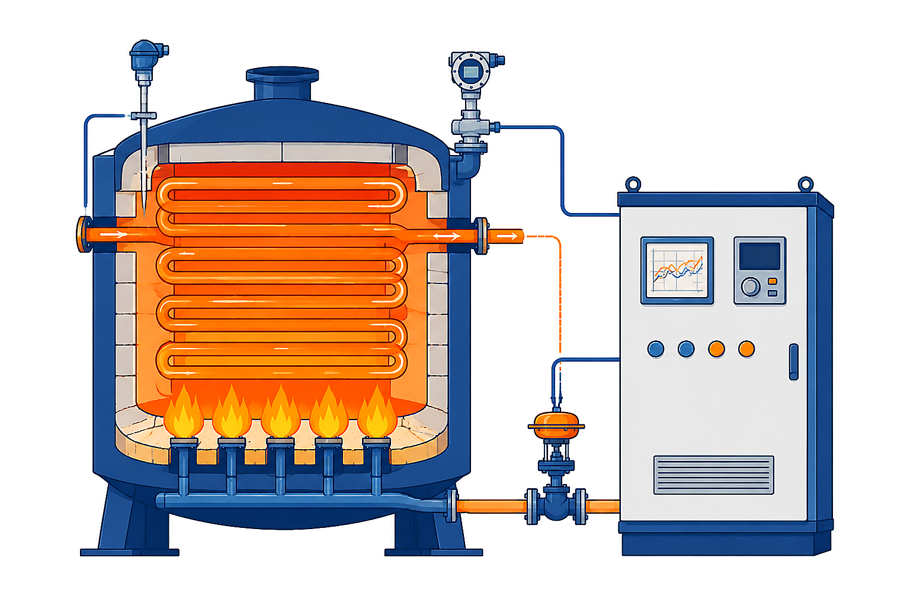

加热炉温度控制系统：FFC（前馈）+ FT 测物料流量；TT/TC 测温调温（反馈）；Σ 汇合后驱动燃料阀
单选题 2 分
图示加热炉温度自动控制系统，采用了何种控制方式？（ ）
A
开环控制
B
闭环控制
C
前馈控制
D
复合控制
答案：D 复合控制。
系统中既有
前馈通道
（FT 检测物料流量 q_F → FFC 前馈调节器，提前补偿物料波动），又有
反馈通道
（TT 测温 → TC 温度调节器，按偏差调节）；两路在 Σ 汇合共同控制燃料阀——前馈 + 反馈 = 复合控制。